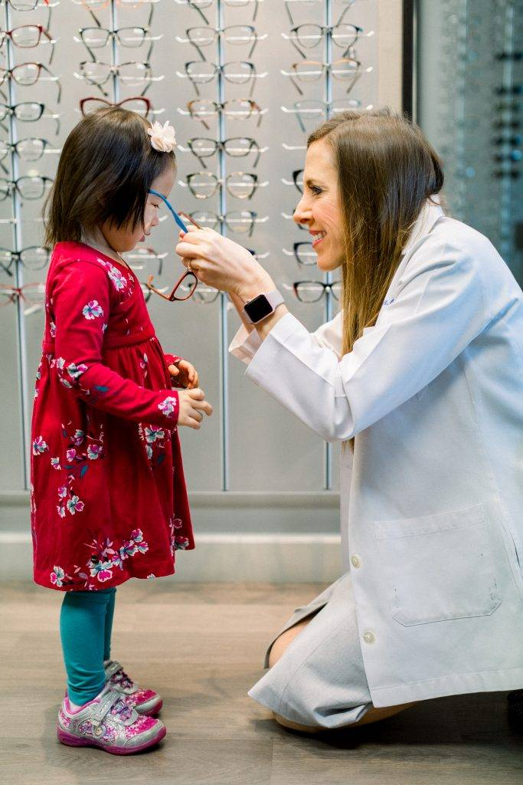

Children’s Eye Care

Children’s Eye Care
Pediatric Eye Exams in , West Houston
It is very important to take your children for eye exams on a regular basis. Pediatric eye care incorporates special techniques and technology to ensure accurate testing and help us accommodate young children.
According to experts, 80% of learning is visual, which means that if your child is having difficulty seeing clearly, his or her learning can be affected. This is especially true for infants who develop and learn about the world around them through their sense of sight. To ensure that your children have the visual resources they need to grow and develop normally, their eyes and vision should be checked by an eye doctor at certain stages of their development.
According to the American Optometric Association (AOA) children should have their eyes examined by an eye doctor at 6 months, 3 years, at the start of school, and then at least every 2 years following. If there are any signs that there may be a vision problem or if the child has certain risk factors (such as developmental delays, premature birth, crossed or lazy eyes, family history or previous injuries) more frequent exams are recommended. A child that wears eyeglasses or contact lenses should have his or her eyes examined yearly. Children’s eyes can change rapidly as they grow.
Book A Pediatric Eye Exam
Eye Exams in Infants: Birth – 24 Months
A baby’s visual system develops gradually over the first few months of life. They have to learn to focus and move their eyes, and use them together as a team. The brain also needs to learn how to process the visual information from the eyes to understand and interact with the world. The foundation for motor development such as crawling, walking and hand-eye coordination also comes with the development of eyesight.
You can ensure that your baby is reaching milestones by keeping an eye on what is happening with your infant’s development and by ensuring that you schedule a comprehensive infant eye examination at 6 months. At this exam, the eye doctor will check that the child is seeing properly and developing on track, and look for conditions that could impair eye health or vision (such as strabismus (misalignment or crossing of the eyes), farsightedness, nearsightedness, or astigmatism).
Since there is a higher risk of eye and vision problems if your infant was born premature or is showing signs of developmental delay, your eye doctor may require more frequent visits to keep watch on his or her progress.
Read about InfantSEE a free one-time eye exam for babies.
Eye Check-Up in Preschool Children: 2-5
The toddler and preschool age is a period when children experience drastic growth in intellectual and motor skills. During this time they will develop the fine motor skills, hand-eye coordination and perceptual abilities that will prepare them to read and write, play sports and participate in creative activities such as drawing, sculpting or building. This is all dependent upon good vision and visual processes.
This is the age when parents should be on the lookout for signs of lazy eye (amblyopia) – when one eye doesn’t see clearly, or crossed eyes (strabismus) – when one or both eyes turn inward or outward. The earlier these conditions are treated, the higher the success rate.
Parents should also be aware of any developmental delays having to do with object, number or letter recognition, color recognition or coordination, as the root of such problems can often be visual. If you notice your child squinting, rubbing his eyes frequently, sitting very close to the tv or reading material, or generally avoiding activities such as puzzles or coloring, it is worth a trip to the eye doctor.
Eye Exams in School-Aged Kids: Ages 6-18
Undetected or uncorrected vision problems can cause children and teens to suffer academically, socially, athletically and personally. If your child is having trouble in school or after school activities there could be an underlying vision problem. Proper learning, motor development, reading, and many other skills are dependent upon not only good vision, but also the ability of your eyes to work together. Children that have problems with focusing, reading, teaming their eyes or hand-eye coordination will often experience frustration, and may exhibit behavioral problems as well. Often they don’t know that the vision they are experiencing is abnormal, so they aren’t able to express that they need help.
In addition to the symptoms written above, signs of vision problems in older children include:
Short attention span
Headaches
Frequent blinking
Avoiding reading
Tilting the head to one side
Losing their place often while reading
Double vision
Poor reading comprehension
The Eye Exam in
In addition to basic visual acuity (distance and near vision, or refractive errors) an eye exam may assess the following visual skills that are required for learning and mobility:
Binocular vision: how the eyes work together as a team
Focusing
Peripheral Vision
Color Vision
Hand-eye Coordination
Tracking
The doctor will also examine the area around the eye and inside the eye to check for any eye diseases or health conditions. You should tell our eye doctor any relevant personal history of your child such as a premature birth, developmental delays, family history of eye problems, eye injuries or medications the child is taking. This would also be the time to address any concerns or issues your child has that might indicate a vision problem.
Children’s Eyeglasses, Contacts & Other Treatments
If the eye doctor does determine that your child has a vision problem, they may discuss a number of therapeutic options such as eyeglasses or contact lenses, an eye patch, vision therapy or Ortho-k, depending on the condition and the doctor’s specialty. Since some conditions are much easier to treat when they are caught early while the eyes are still developing, it is important to diagnose any eye and vision issues as early as possible.
Following the guidelines for children’s eye exams and staying alert to any signs of vision problems can help your child to reach his or her potential.
InfantSEE®
This service offers early detection of potential eye and vision problems at no cost regardless of income or ability to pay. It is a one-time, comprehensive eye and vision assessment for babies, usually conducted between the ages of 6 and 12 months.
Kids' Vision & Learning
Vision plays a crucial role throughout childhood and beyond. Many parents don't understand how vision helps their children develop appropriately.
Home » Eye Care Services » Comprehensive Eye Exams » Children’s Eye Care
Pediatric Eye Exams in , West Houston
Eye Exams in Infants: Birth – 24 Months
Eye Check-Up in Preschool Children: 2-5
Eye Exams in School-Aged Kids: Ages 6-18
The Eye Exam in
Children’s Eyeglasses, Contacts & Other Treatments


More from Eye Shop
Book your exam
Eye Shop - Located at 13130 Memorial Drive, Houston, TX 77079. Phone: 713-977-8464